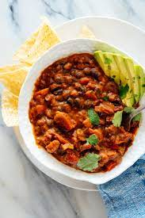
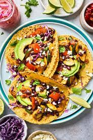

Linet focuses on a plant based diet.
She tries to incoorporate some animal meals to bring a balance.
In Linet's Kitchen,she tries to focus on flexibility. Linet achieves this by offering a platform for meal prep.She gives her clients a chance to customize their recipes. This has proven veryfulfilling as many customers have given a positive feedback. Linet emphasizes on customer satisfaction and that is why her business has flourished this far. She hopes to start a Facility for training aspiring chefs with her delish recipes.
Vegan Chilli
Linet uses mushrooms,chillies and her secret sauce for this recipe.She ensures that the chillies are just the perfect portions for her customers to enjoy.
Vegan Tacos
Linet uses mushrooms to create a cream of mushrooms soup that she uses in the tacos. She then adds on cherry tomatoes and spring onions. Balance of flavour mmhhhh
Aside from her signature recipes Linet has other favourites,all which are top sellers in the industry
Linet uses spinach,mushrooms,cream cheese,garlic and sause to create this magnificent dish.